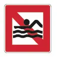
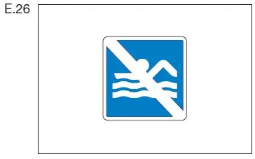

§ 8.10 Bade- und Schwimmverbot
Binnenschifffahrtsstraßen-Ordnung
1. Das Baden und Schwimmen ist verboten
a) im Bereich bis zu 100,00 m ober- und unterhalb einer Brücke, eines Wehres, einer Hafeneinfahrt, einer Liegestelle oder einer Anlegestelle der Fahrgastschifffahrt,
b) im Schleusenbereich,
c) im Arbeitsbereich von schwimmenden Geräten,
d) an einer durch das Tafelzeichen A.20 bezeichneten Stelle. | A.20  |
2. Ein Badender und ein Schwimmer müssen sich so verhalten, dass ein in Fahrt befindliches Fahrzeug oder ein in Fahrt befindlicher Verband nicht behindert wird.
3. Vorschriften, die das Baden oder Schwimmen in Flüssen und Kanälen an anderen als den in Nummer 1 genannten Stellen einschränken oder verbieten, bleiben unberührt.
4. Das Bade- und Schwimmverbot nach Nummer 1 Buchstabe a und b und ein durch eine Vorschrift nach Nummer 3 ausgesprochenes Bade- oder Schwimmverbot kann durch das Tafelzeichen E.26 (Anlage 7) kenntlich gemacht werden. |  |